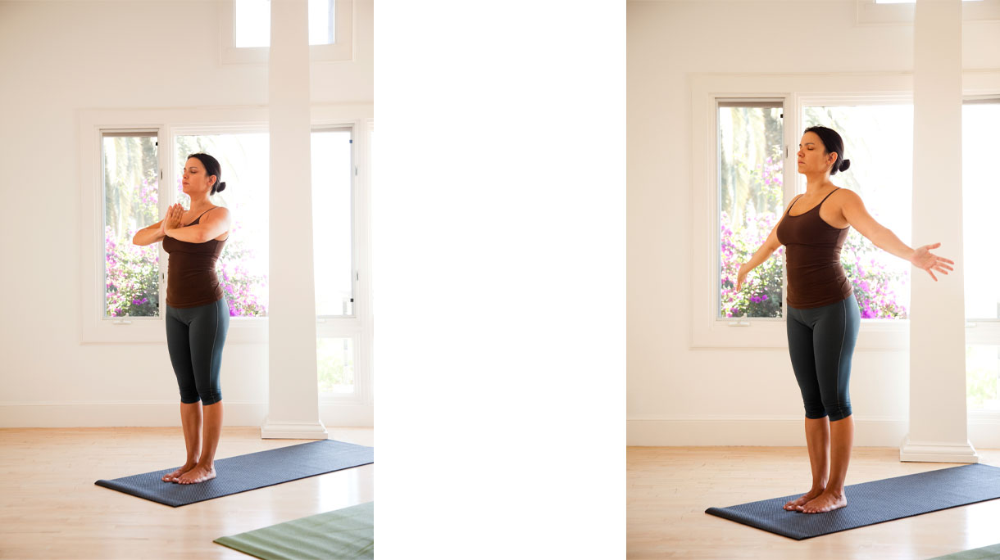
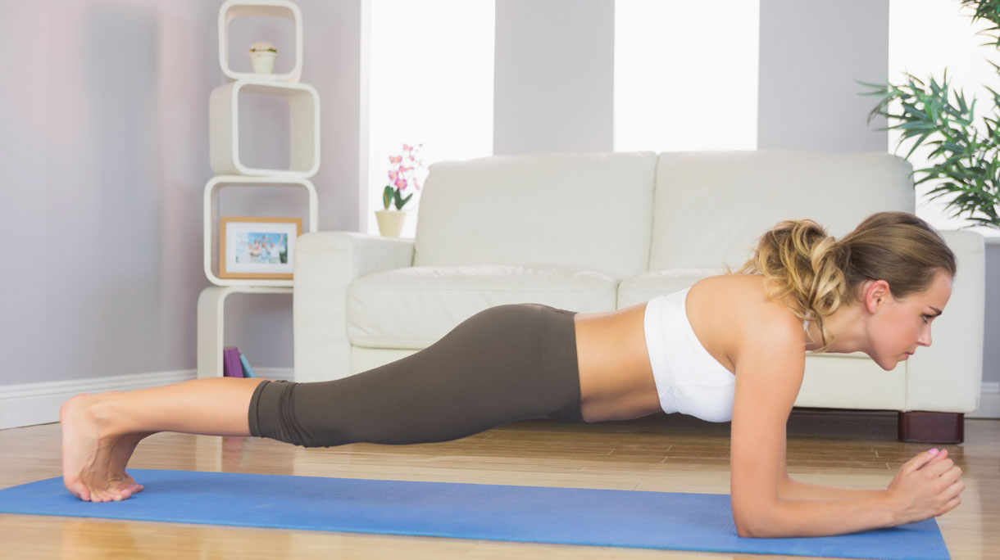
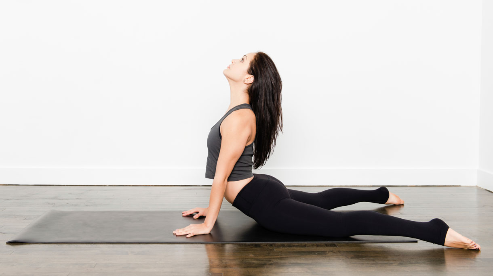

THUIS ZELF YOGA LEREN – 5 ONMISBARE TIPS VOOR BEGINNERS
Je bent vol goede nieuwe moed en wilt thuis zelf Yoga leren. Je hebt gehoord dat Yoga goed is voor je flexibiliteit, je sterker maakt, dat je er rustiger van wordt en dat het goed is voor tal van andere dingen. Toch is dit niet overdreven. Yoga is een een methode om je hele leven weer in balans te krijgen. Daar hoort een fysiek sterk lichaam en een gezonde en scherpe geest bij.
Aan een sterk lichaam heb je niets als je mentaal nog steeds niet sterk in je schoenen staat en geen controle hebt over wat er in je hoofd omgaat. En een scherpe geest brengt je veel verder als je lichaam ook vitaal en sterk is. Beide zijn dus belangrijk en kan je eigenlijk niet los van elkaar zien. Dit is een van de fundamentele gedachtes achter Yoga.
Maar waar begin je?
1. Zorg voor de juiste spullen
Voordat je start met thuis Yoga leren, is het belangrijk dat je de juiste spullen in huis hebt. Als je serieus Yoga wilt leren, dan raden we je aan om te investeren in een goede basisset van de juiste Yoga benodigdheden.
Wat heb je nodig?
- Een Yogamatje; Er zijn hele goedkope matjes van een paar euro te koop, maar we raden je aan om te investeren in een iets duurzamer matje. De goedkope matjes zijn vaak erg dun, hebben weinig grip en gaan niet lang mee. Dit maakt je het Yoga leren een stuk lastiger en minder leuk.
- Een Yogablok; Ken je die plaatjes waarbij je Yogi’s hun benen in hun nek ziet leggen? Dat is leuk, maar niet iedereen kant dit. Ieder lichaam is anders gebouwd en het is belangrijk om hier rekening mee te houden. Gebruik dus een Yogablok om je te ondersteunen tijdens het leren van de Yoga oefeningen.
- Als je alle voordelen van Yoga wilt ervaren is een Yogapractice met op het einde een meditatiesessie essentieel. Om goed te kunnen mediteren en niet gestoord te worden door fysieke ongemakken, raden we je aan om een meditatiekussen aan te schaffen. Hierop kun je gemakkelijker voor lange tijd comfortabel zitten.
- Overige dingen die handig kunnen zijn tijdens de Yoga; een handdoekje en een flesje water.
2. Weet waar je op gaat focussen
Zoals algemeen bekend is kan Yoga goed zijn voor tal van dingen. We raden je echter wel aan om op één of twee dingen te focussen als je begint met Yoga leren. Dit geeft je houvast en focus. Er zijn namelijk ontzettend veel stromingen en ook binnen dezelfde stroming kom je vaak grote verschillen tegen.
Het is prima om je in het begin alleen op het fysieke te richten. Bijvoorbeeld omdat je rugklachten hebt, omdat je fysiek sterker wilt worden of gewoon een paar kilo’s kwijt wilt. Hier is niets mis mee. Maar houd wel in je achterhoofd dat dit niet het echte doel is van Yoga. Ook is het natuurlijk prima om je meer te richten op de meditaties wanneer je bijvoorbeeld merkt dat je wat meer rust en focus kunt gebruiken in je leven.
3. Weet welke Yoga oefeningen je wil leren
Als je de juiste spullen hebt en je weet waar je op gaat focussen, is het daarna van belang dat je weet welke Yoga oefeningen je moet leren om je te helpen bij hetgeen waar jij op focust. Je kunt natuurlijk lessen bij een studio gaan volgen en dit aan je docent vragen. Hier kun je vervolgens thuis weer mee aan de slag. Maar je kunt ook vanaf het begin thuis Yoga leren.
Met YouTube filmpjes kun je een eind komen, maar uiteindelijk hangen de filmpjes niet helemaal samen om jouw te begeleiden naar het doel wat je voor ogen hebt. Het is vaak beter om te investeren een professioneel online programma, zodat je door middel van een aantal zorgvuldig samengestelde lessen toe werkt naar één doel. Yoga oefeningen leren gaat nu eenmaal makkelijker met een goed samengesteld programma.
4. Zorg voor een goede Yoga routine
Yoga leren zal het beste gaan wanneer je regelmatig op de mat stapt. Als je het drie dagen achter elkaar doet, dan weer twee weken niet, één keer wel etc. wordt het erg lastig om naar een doel toe te werken en progressie in je practice te zien.
Spreek daarom met jezelf af hoe vaak je per week gaat oefenen, hoe lang je gaat oefenen en op welk tijdstip je Yoga gaat doen. Yoga leren zit hem niet in het feit dat je je tenen aan kunt raken, maar in de routine en levensstijl die je er aan vast plakt.
Stap je vijf keer per week ‘s ochtends 20 minuten op je mat. Dan weet ik zeker dat met een heel snel tempo richting je doelen gaat en dat het niveau van je practice vooruit schiet. Bovendien is het gewoon lekker om elke dag even bezig te zijn met een sterk lichaam en een gezonde en scherpe geest. Maak dus een Yogaroutine voor jezelf waaraan je je houdt.
5. Have fun!
Heb plezier in je practice en zorg dat je het naar je zin hebt. Neem jezelf niet te serieus en wees bereid om om jezelf te kunnen lachen. Hou het speels en luchtig. Sta je zelf toe om fouten te maken en voor gek te staan. Alleen deze speelsheid zal er al voor zorgen dat je ontzettend veel spanning in je lichaam los laat en dat zorgen als sneeuw voor de zon zullen verdwijnen.
AAN DE SLAG
Dit zijn de vijf basishoudingen van yoga. Je kunt ze achter elkaar uitvoeren en zo een verkorte versie doen van de Zonnegroet. De Zonnegroet is bedoeld om de dag op een positieve manier te beginnen. Doe er elke dag bijvoorbeeld een stuk of vijf.
- De Berg (Tadasana);
De Berghouding is goed voor je stabiliteit en stevigheid. Ga rechtop staan met je handpalmen tegen elkaar aan voor je borst en je voeten op heupbreedte. Breng je armen naar beneden en dan in een zwaaiende beweging zijwaarts langs je lichaam omhoog. Doe boven je hoofd je handpalmen weer tegen elkaar en wijs met gestrekte armen omhoog. 'Verleng' je rug, open je borst en adem een aantal keer bewust in en uit. Blijf in deze houding staan en ga door met oefening twee.  - Staande tang (Uttanasana);
De Staande tang is goed voor soepele hamstrings en een soepele rug. Adem uit en buig vanuit je heupen voorover, met je navel richting je bovenbenen. Hou je benen sterk en indien mogelijk gestrekt. Maak je rug lang. Je handen hangen rustig naast je knieën (of als je erg soepel bent: naast je voeten). Adem weer in en uit. Blijf in deze houding staan en ga door met oefening drie. - Plank (Phalakasana);
De Plankhouding is goed voor sterke arm-, been- en bilspieren. Zet je handen op de grond, leun voorover en stap zo ver mogelijk naar achteren. Adem in, hou je adem vast, en breng je lichaam in een rechte lijn boven de grond (zo stevig als een plank). Laat je heupen niet naar beneden zakken. Kijk zelf hoelang je deze houding prettig vindt. Adem tot slot uit, buig de knieën en zet ze op de grond. Zak dan door je armen rustig naar beneden. Je ligt nu plat op je buik. Blijf in deze houding liggen en ga door met oefening vier.

- Cobra (Bhujangasana);
De cobrahouding opent de borst en versterkt je rugspieren. Leg je handen plat op de grond, ter hoogte van je schouders. Maak je bovenlichaam lang en hou de nekwervels in het verlengde van je rug. Creëer een achteroverbuiging in je onderrug en duw je borst als het ware tussen de armen door omhoog. Het bekken blijft aan de grond. Blijf goed doorademen. Blijf in deze houding liggen en ga door met oefening vijf.

- Neerwaartse hond (Adho Mukha Svanasana);
Voor de verlenging van je kuitspieren, je hamstringspieren en een soepele rug. Plaats je tenen 'in' de mat. Adem uit en til je heupen op (je duwt jezelf met je armen naar achteren en je billen komen omhoog). Hou je hoofd tussen je armen en verleng je ruggengraat, zodat je in een omgekeerde letter V staat. De hielen hoeven niet tegen de grond, alleen als het vanzelf gaat. Blijf indien mogelijk vijf ademhalingen zo staan.